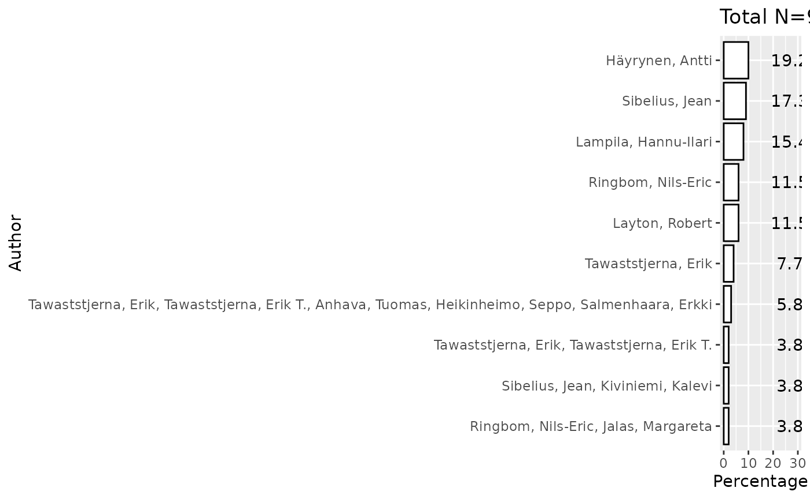

Introduction
The refine_metadata function is designed to clean and
standardize metadata retrieved from the Finna API. This function
enhances metadata usability by:
-
Validating Required Fields: Ensures the presence of
specified metadata fields, returning
NULLif any are missing. - Selecting Relevant Fields: Allows users to specify which metadata fields to retain for streamlined analysis.
-
Handling Missing Values (Optional): If
fill_na = TRUE, missing values (NA) are replaced with placeholders. -
Logging Missing Data (Optional): If
verbose = TRUE, prints a summary of missing values to assist in data quality assessment.
This preprocessing step ensures metadata consistency, improving its reliability for subsequent analysis and visualization.
Example Usage
library(finna)
library(ggplot2)
# Retrieve metadata from Finna API
sibelius_data <- search_finna("sibelius")
# Refine metadata and display missing data summary
refined_data <- refine_metadata(sibelius_data)
print(refined_data)## # A tibble: 100 × 8
## Title Author Year Language Formats Subjects Library Series
## <chr> <chr> <chr> <chr> <chr> <chr> <chr> <chr>
## 1 Sibelius favourites : … Sibel… 2001 NA Äänite… NA Lapin … NA
## 2 Sibelius Tawas… 1997 fin Kirja,… Sibeliu… Anders… NA
## 3 Sibelius Lampi… 1984 fin Kirja,… Sibeliu… Helka-… NA
## 4 Sibelius Tawas… 2003 fin Kirja,… Sibeliu… Kansal… NA
## 5 Sibelius Ringb… 1948 fin Kirja,… Sibeliu… Kirkes… NA
## 6 Sibelius Downe… 1945 fin Kirja,… Sibeliu… OUTI-k… NA
## 7 Sibelius Tawas… 1968 swe Kirja,… Sibeliu… Helle-… NA
## 8 Sibelius Ringb… NA swe Kirja,… Sibeliu… Taidey… NA
## 9 Sibelius Layto… 1978 eng Kirja,… Sibeliu… Helka-… Maste…
## 10 Sibelius Ottaw… 1968 eng Kirja,… Sibeliu… Jyväsk… NA
## # ℹ 90 more rowsVisualizing Metadata Distribution
The top_plot() function can be used to visualize key
metadata distributions, such as author frequency and yearly publication
distribution.
Author Distribution Analysis
# Retrieve and refine metadata
sibelius_data <- search_finna("sibelius")
refined_data <- refine_metadata(sibelius_data)
# Plot top 10 authors with frequency percentages
top_plot(refined_data$Author, field = "Author", ntop = 10, show.percentage = TRUE) +
xlab("Author") +
ylab("Percentage")
Yearly Publication Distribution
library(finna)
# Retrieve and refine metadata
sibelius_data <- search_finna("sibelius")
refined_data <- refine_metadata(sibelius_data)
# Plot publication year distribution
top_plot(refined_data$Year, field = "Year", ntop = 10, show.percentage = TRUE) +
xlab("Publication Year") +
ylab("percentage distribution of Publications")
This vignette demonstrates how refine_metadata()
improves metadata usability, facilitating effective analysis and
visualization using the top_plot() function.